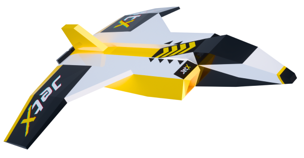
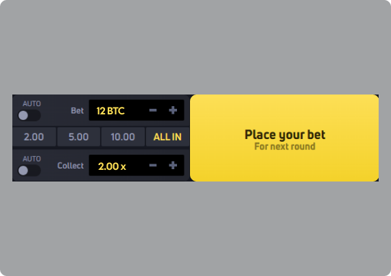
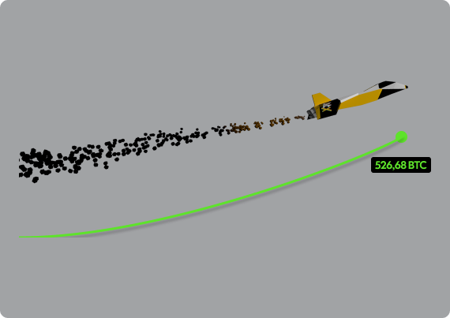
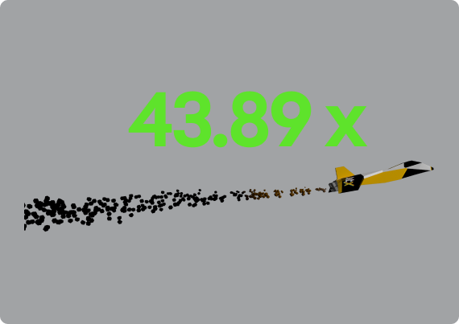

Votre jet privé vers
la réussite
Dépêchez-vous d'embarquer dans l'avion JetX,
destination les plus beaux gains de votre vie !
Dépêchez-vous d'embarquer dans l'avion JetX,
destination les plus beaux gains de votre vie !


Avant le décollage, vous devriez placer une mise... ou même deux !

Plus le jet prend de l'altitude, plus le multiplicateur de votre mise augmente.

Appuyez sur le bouton Collecter avant que l'avion n'explose.
Le jeu est facile à maîtriser et passionnant.
C'est vous qui décidez quand encaisser et vous prenez ce qui vous revient.
Le RTP de JetX est de 98 % et il rapporte plus que toutes les autres machines à sous sur le net.
Il y a de nombreux jeux de ce genre, mais JetX en est le roi.
Qu’est-ce qu’un jeu JetX ? Si vous vous posez cette question, vous ratez quelque chose ! Les jeux JetX sont déjà très populaires sur les casinos en ligne modernes, et ce type de jeu d’argent en ligne attire chaque jour de nouveaux adeptes.
Infos sur le jeu + où jouer. Jet X est un jeu de paris de style arcade au gameplay très simple. Son principal avantage est que vous restez maître de votre chance, quoi qu’il arrive, à l’inverse d’autres machines à sous. On peut même dire que vous êtes aux commandes, sans mauvais jeu de mots. Le logo vous montre en quoi ce jeu consiste : un avion vole de plus en plus haut, augmentant le multiplicateur de mise (ce qui est indiqué par la lettre X plus grande). Ce jeu est actuellement disponible sur de nombreux sites de jeux d’argent.
Le principe du jeu Jet X est le suivant : un avion décolle, et plus il prend de l’altitude, plus le multiplicateur de mise augmente. Mais gare au mécanisme d’explosion. Le jet qui peut exploser à tout moment. Tout ce que les joueurs de JetX ont à faire, c’est d’encaisser leur mise avant que l’avion n’explose !
C’est là la principale différence entre une machine à sous et l’expérience Jet X. Les résultats des machines à sous ordinaires et à jackpot progressif sont déterminés de manière aléatoire. À l’inverse, JetX vous permet de déterminer vous-même le montant de votre gain. La seule chose générée aléatoirement est le moment où l’avion explose, ce qui ajoute un facteur d’imprévisibilité et rend le jeu encore plus excitant. Les machines à sous n’offrent pas du tout le même niveau de contrôle sur votre chance !
Tests et avis. De nombreux testeurs louent JetX comme l’un des meilleurs " jeux de gain «. Il est relativement facile de tirer profit de ce jeu. Certains l’appellent également » l’avion à sous " ou " la machine à sous Jet-X ". Une autre qualité saluée par les critiques est le fait que Jet X offre des jackpots supplémentaires aux utilisateurs les plus chanceux. Vous pouvez même toucher l’ultime Galaxy Jackpot, une fonction bonus très spéciale qui est activée lorsque vous misez plus de 1 €.
Dans Jet X, le prix des mises est déterminé uniquement par votre budget. Vous pouvez placer une mise aussi modique que 0,10 € ou aussi importante que 1 000 €. Ainsi, l’avis général sur JetX est positif, car SmartSoft Gaming vous offre un large éventail de mises possibles dans ce jeu.
La réponse à cette question est assez simple. Tous ces jeux reposent sur les mêmes principes fondamentaux. Crash est un pionnier du genre. Toutefois, si on compare JetX à Crash et à Aviator, on s’aperçoit que ce premier a une conception nettement supérieure et offre également des bonus et des fonctionnalités d’encaissement automatique que l’on ne trouve pas dans Aviator et Crash.
JetX est un jeu très simple. La seule chose dont vous avez besoin est un peu d’intuition et de chance. Les trois phases de Jet X sont les suivantes :
1. Décollage du jet.
2. Ascension du jet.
3. Explosion du jet.
À présent, examinons en détail ce qui se passe dans chacune des trois phases principales d’un tour ordinaire.
● Première phase. La phase de préparation. Le jet à l’écran accueille les passagers qui embarquent. Pendant cette phase, vous placez votre mise initiale et, si vous le souhaitez, vous pouvez ajouter une deuxième mise. Cette phase dure environ 10 secondes, alors dépêchez-vous ! L’avion est sur le point de décoller !
● Deuxième phase. C’est là que les choses deviennent intéressantes. À mesure que l’avion prend de l’altitude, le multiplicateur de mise augmente de plus en plus. À ce stade, vous pouvez appuyer sur le bouton Collecter, qui vous permettra d’encaisser votre mise avec le multiplicateur de mise actuel. Vous pouvez attendre aussi longtemps que vous le souhaitez, mais à un moment donné, le mécanisme d’explosion se déclenchera et le jet s’écrasera, entraînant la perte de tout l’argent que vous auriez potentiellement gagné.
● Dernière phase. L’explosion de l’avion marque la fin du tour. Les chanceux qui ont encaissé au bon moment obtiennent des gains, et ceux qui ont attendu trop longtemps se préparent à toucher le gros lot au prochain tour.
Maintenant, jetons un œil à l’interface. Il est assez simple, mais il peut être déroutant si vous le voyez pour la première fois. À droite, JetX indique le flux en direct des paris gagnés et perdus de tous les joueurs actuels. En ce sens, JetX est une sorte de jeu multijoueur.
Une version de démonstration est disponible pour JetX. Cette version vous permet de jouer avec des crédits virtuels pour vous familiariser avec le jeu avant de miser de l’argent réel. La démo est plus que conseillée pour ceux qui n’ont jamais joué à ce genre de jeux.
Il existe également le prédicteur JetX en ligne, un outil qui, apparemment, peut prédire l’issue de chaque tour de jeu. Nous vous conseillons vivement d’éviter ces sites ou applications. Ils ne cherchent généralement qu’à voler votre compte de casino en ligne. Comme il a été mentionné plus haut, JetX est un jeu imprévisible et il n’y a aucun moyen de prédire le moment où l’avion s’écrasera. Il n’y a pas de tendances dans JetX, ne l’oubliez pas !
Les bonus JetX offrent également la possibilité d’essayer le jeu tout en ayant la chance de gagner de l’argent réel. Il est rare que les sites de jeux en ligne offrent un code bonus spécial pour JetX, mais vous pouvez utiliser les meilleurs bonus et paris gratuits des casinos pour jouer à JetX. Vous avez ainsi la possibilité de jouer avec de l’argent supplémentaire qui
pourrait devenir des gains réels. En gros, un code bonus JetX est un code promotionnel qui vous offre de l’argent à jouer sur JetX.
Vous savez comment jouer à JetX, mais cela ne suffit pas : il faut également savoir comment gagner. Soyons clairs : JetX est un jeu de paris reposant qui repose purement sur la chance, il n’y a donc pas de technique infaillible pour gagner à tous les coups. Nous vous mentirions si nous vous disions qu’il existe telle chose. Néanmoins, nous avons quelques conseils pour minimiser les risques de perte.
Tout d’abord, la meilleure stratégie pour tirer profit sur le long terme dans Jet X est de placer des mises assez réduites. Une mise plus modeste peut s’avérer très rentable si vous parvenez à toucher un multiplicateur important. En outre, la perte sera moins pénible si vous échouez à encaisser avant l’explosion — ce qui arrivera certainement plus d’une fois. À l’inverse, les mises élevées sont bien plus rentables si vous touchez un multiplicateur considérable. Mais elles peuvent épuiser votre budget très rapidement si vous traversez une mauvaise passe.
Deuxièmement, il est préférable d’encaisser sur un multiplicateur faible. Certes, ce n’est pas aussi satisfaisant que de toucher un multiplicateur de x200, mais croyez-nous, cela vous fera économiser beaucoup d’argent sur le long terme. Misez régulièrement sur les gains de JetX. Même si leur montant est modeste, c’est une façon fiable de gagner de l’argent.
Un autre conseil utile est de placer une mise en mode manuel et de régler la collecte automatique sur la deuxième mise.
JetX est développé par SmartSoft Gaming, une société
de logiciels renommée dans le domaine des jeux d'argent
Le multiplicateur de mise peut
atteindre jusqu'à x999 999.
Vous pouvez miser jusqu'à 1 000 €.
Oui, des jackpots sont attribués aléatoirement
aux joueurs actifs.
Vous pouvez définir une valeur de multiplicateur
de mise à partir de laquelle votre mise sera automatiquement encaissée
Vous pouvez en placer une pour un multiplicateur faible,
et une autre pour un multiplicateur élevé